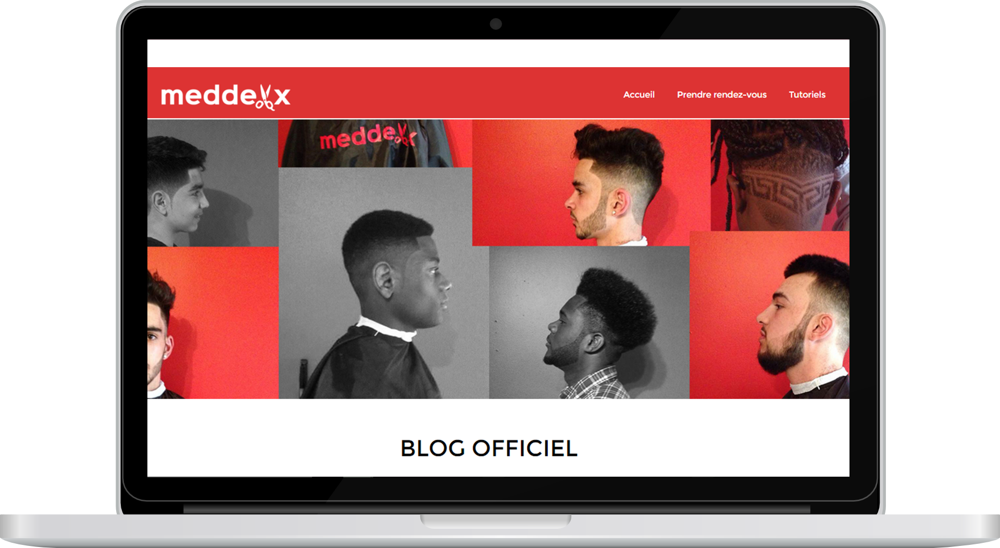

Meddexx

Meddexx est un jeune coiffeur pour hommes établi dans la ville de Québec.
Lors de son établissement à Québec en 2015, le jeune homme est devenu une référence dans son domaine, aidé par une stratégie intélligente basée sur une présence marquée sur le web, avec moi comme un des conseiller marketing, graphiste web et webmestre.
Le succès de Meddexx est aussi amputable à sa réputation sur les médias sociaux, construite avec rigueur et intelligence par le jeune homme. Je travaille toujours avec lui à construire une image de marque forte à travers tous ses projets web.
- Design
- Conception graphique (logo, cartes, image de marque web)
- Hébergement
- Marketing web(SEO, Analyse de trafic, Visibilité de l'entreprise...)
- Gestion génerale et mise à jour du site web (webmaster)
- WordPress
- HML5
- CSS3
- Photoshop
- Illustrator
- Outils d'analyse Google variés